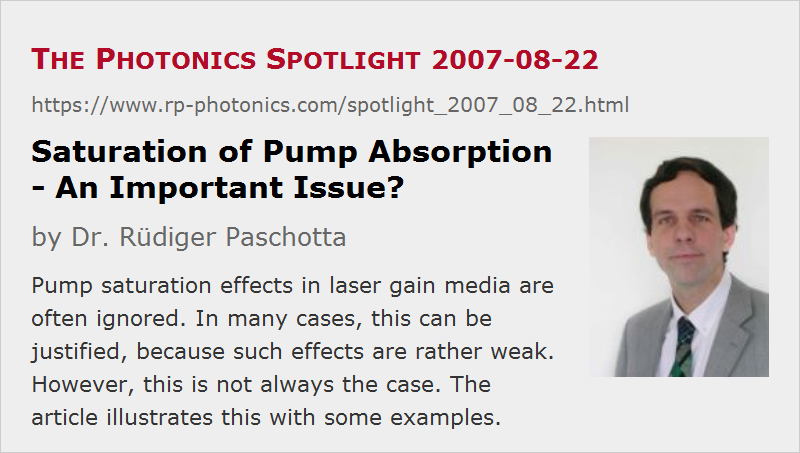

Saturation of Pump Absorption - An Important Issue?
Posted on 2007-08-22 as a part of the Photonics Spotlight (available as e-mail newsletter!)
Permanent link: https://www.rp-photonics.com/spotlight_2007_08_22.html
Author: Dr. Rüdiger Paschotta, RP Photonics Consulting GmbH
Abstract: Pump saturation effects in laser gain media are often ignored. In many cases, this can be justified, because such effects are rather weak. However, this is not always the case. The article illustrates this with some examples.

Ref.: encyclopedia articles on pump absorption
When saturation in lasers or amplifiers is discussed, this happens most often in the context of gain saturation. However, there can also be saturation of pump absorption: the efficiency of pump absorption (and thus also the wall-plug efficiency) can be reduced, essentially by bleaching of the ground state population of the laser-active ions or atoms.
The question is then whether such effects are strong enough to be worth consideration. Here are some thoughts:
- In a typical continuous-wave Nd:YAG laser, the signal power circulating in the laser resonator leads to an intensity in the laser crystal which is a few times the saturation intensity. Compared to the circulating laser intensity, the pump intensity is normally much smaller. Furthermore, the saturation intensity of Nd:YAG related to pump absorption (at 808 nm) is several times higher than the gain saturation intensity at 1064 nm. Consequently, pump saturation effects cannot be strong.
- Pump saturation during laser operation is also deemed to be weak in cases where laser operation starts as soon as only a tiny fraction of the laser-active ions is excited. Laser operation then clamps the upper-state population, so that strong ground state depletion is not possible. This is the case in many (but not all) four-level lasers.
- Local pump saturation (e.g. at the pumped end of a laser crystal) does not inevitably have an important impact on the performance, since the lower pump absorption at some locations may be compensated by the resulting higher pump intensity at other locations. What matters is often only how much power is absorbed altogether, but not where exactly.
- In a Q-switched laser, pump saturation effects may be stronger, because (a) no lasing occurs before the pulse build-up, and (b) because minimization of the pulse width often leads one to apply a relatively high pump intensity. The latter also applies to lasers operating on weaker transitions, such as the 1.3-μm transition of Nd:YAG.
- Quasi-three-level lasers require the excitation of a substantial fraction of the laser-active ions. Therefore, significant pump saturation effects often occur in such devices. Extreme effects can occur in true three-level lasers.
- Particularly strong pump saturation occurs in cases where both the absorption cross sections and the applied pump intensities are rather high. An example is an ytterbium-doped fiber amplifier pumped around 975 nm (at the strong ytterbium absorption peak). Such a device may be operated with a pump intensity far above its pump saturation intensity, and this can lead to peculiar saturation behavior: the pump power decays about linearly (rather than exponentially) in the fiber, and the slope of this decay can be substantially increased if the signal intensity is also high. Furthermore, the saturation characteristics for the signal wave can also be strongly modified, because ions undergoing stimulated emission can be quickly returned to the upper laser level.
These examples show that a general statement on the importance of pump saturation effects should not be made. Often enough, you may ignore such effects, but it is good to know where.
This article is a posting of the Photonics Spotlight, authored by Dr. Rüdiger Paschotta. You may link to this page and cite it, because its location is permanent. See also the RP Photonics Encyclopedia.
Note that you can also receive the articles in the form of a newsletter or with an RSS feed.
Questions and Comments from Users
Here you can submit questions and comments. As far as they get accepted by the author, they will appear above this paragraph together with the author’s answer. The author will decide on acceptance based on certain criteria. Essentially, the issue must be of sufficiently broad interest.
Please do not enter personal data here; we would otherwise delete it soon. (See also our privacy declaration.) If you wish to receive personal feedback or consultancy from the author, please contact him e.g. via e-mail.
By submitting the information, you give your consent to the potential publication of your inputs on our website according to our rules. (If you later retract your consent, we will delete those inputs.) As your inputs are first reviewed by the author, they may be published with some delay.
|  |
If you like this page, please share the link with your friends and colleagues, e.g. via social media:
These sharing buttons are implemented in a privacy-friendly way!